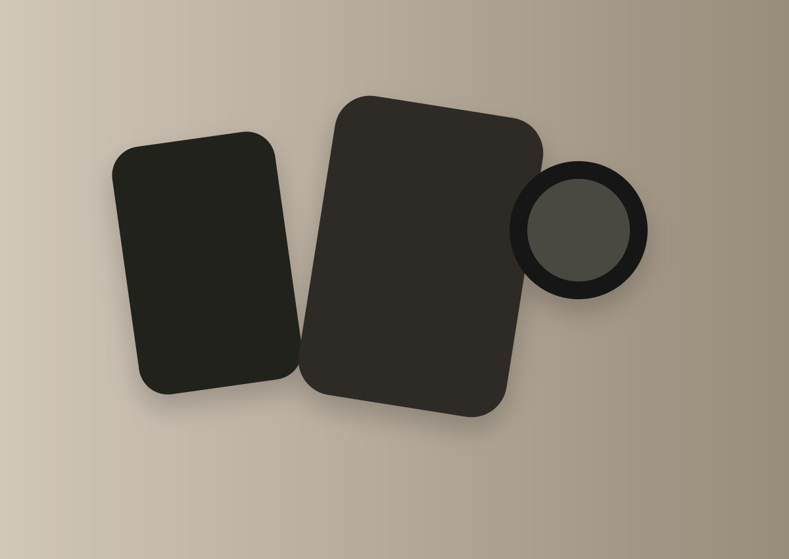

The AUREN collection — 01
Designed for the
everyday extraordinary.
Thoughtfully designed essentials that bring function, form and quiet character to the things you carry every day.
The AUREN philosophy
Less,
but better.
We believe in essentials that do more than just function. AUREN pieces are designed to be carried every day, to age beautifully and to feel quietly unmistakable.
The everyday edit

A different rhythm
Objects with presence, not noise.
Intentional design lives in proportion, material and usefulness. We create pieces that feel calm, useful and enduring.
Read the journalWhat guides us
01
Considered design
Every line, form and finish is chosen to be useful and enduring.
02
Material honesty
We favour tactile, long-lived materials that feel better over time.
03
Quiet confidence
Everyday essentials should bring ease, not excess.
From the journal